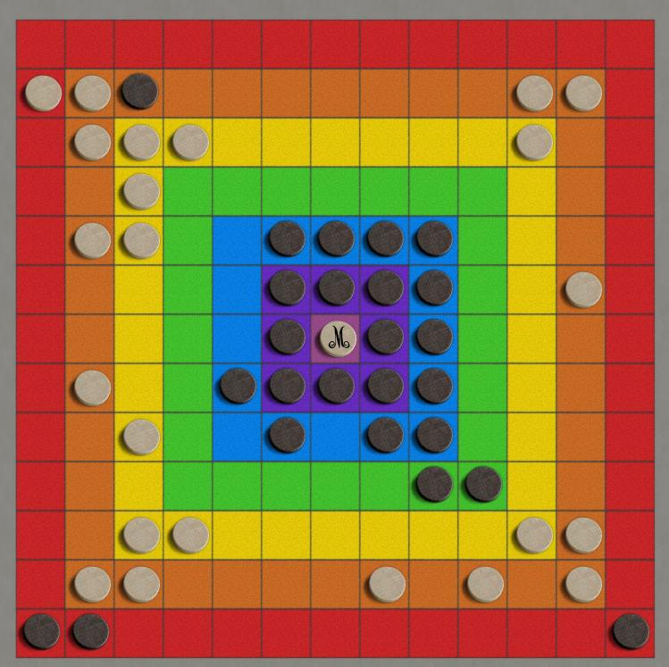

Morelli
Morelli is a traditional-style abstract with a satisfyingly unusual mix
of movement, goal, and capturing styles. Those are the headlines, read
the short form rules
or unabridged rules
here.
Briefly:
- Pieces move like chess queens, but must end movement
in a color band that is closer to the center.
- Capture is custodial, like othello except only direct
captures of a single piece in each direction.
- A move that places 4 pieces in radial symmetry around
the center captures it.
- The object of the game is to have control of the
center at the end of the game.
Robots:
Dumbot is hard to beat on a 9x9 board, but weaker at larger boards.
|

|